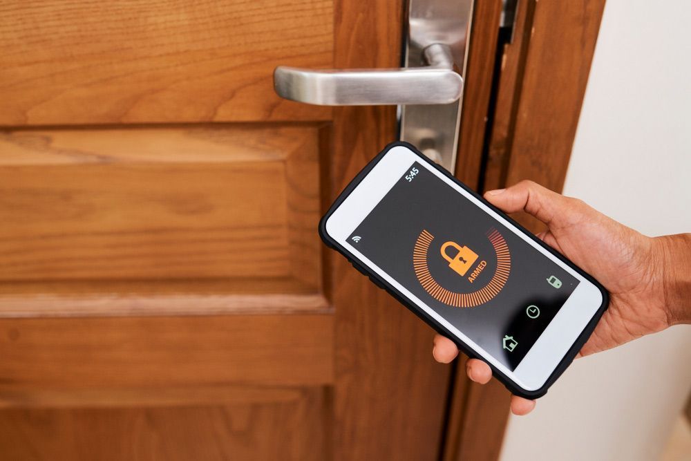

On this page
AT A GLANCE
At SPL Security Solutions, we understand the importance of keeping your property safe and secure.
Get A Free Quote Now!

Looking out for Homes, Cars & Businesses
At SPL Security Solutions, we understand the importance of keeping your property safe and secure. Our comprehensive range of locksmith services in Northern NSW caters to homes, businesses and vehicles, providing real peace of mind for our clients.
From lock installations and replacements to key duplication, restricted access systems and fire resistant safes, we have the expertise to provide unbeatable security solutions, tailored to your individual needs. We take the security of your property seriously—we can assess your existing residential or commercial security systems and offer customised solutions that meet your specific requirements. We also offer automotive locksmith services including transponder key cutting, rekeying and broken key retrieval.
For more information on our comprehensive range of locksmith services, call (07) 5588 8111.
Northern NSW residents can take advantage of our comprehensive residential locksmith services for enhanced home security. We provide precise lock installations, professional repairs and preventative rekeying to keep your property safe. Our key duplication services are also available for convenience, alongside our 24/7 emergency lockout assistance.
Security is paramount to the success of any business. Our commercial locksmith services in Northern NSW help businesses protect their premises, assets and sensitive areas with high-security locks, master key systems and access control solutions. What's more, our team offers emergency assistance 24/7 and can conduct security assessments for added peace of mind.
For automotive locksmith services in Northern NSW, our team is just a call away. We offer key replacements, duplications and transponder programming services for all types of vehicles. Our experts can quickly assist with lost or damaged keys, providing efficient and professional solutions to get you back on the road. And with our 24/7 emergency assistance, you'll never have to stress about being locked out of your car.
With restricted key systems in Northern NSW, we provide businesses and organisations with an advanced security solution that uses patented designs to prevent unauthorised duplication of keys. This provides increased control over access points, reducing the risk of breaches and safeguarding assets. Our team collaborates closely with clients to customise these systems to suit their needs.
We supply safes throughout Northern NSW that offer optimal protection for your valuables and important documents. Our selection includes options with reinforced walls, fire resistance and advanced locking mechanisms to prevent theft and damage. We also offer professional installation services, ongoing maintenance and emergency unlocking assistance as part of our comprehensive safe solutions.
Protect your property in Northern NSW with our advanced security solutions. Our integrated systems include CCTV cameras, alarm systems, access control and intercoms for comprehensive surveillance and monitoring capabilities. We work with you to design a tailored system that meets your specific security needs and budget. Plus, we offer professional installation services and ongoing maintenance if requested.
Northern NSW properties can rely on our lock hardware including advanced keyless systems, reinforced deadbolts and traditional locks. Each product is designed to ensure long-lasting security.
In Northern NSW, we offer door hardware such as reliable hinges, modern handles and energy-efficient closers. These solutions provide durability and ease of operation for residential and commercial doors.
We provide top-tier architectural door hardware, combining fire-rated durability, efficient closers, and elegant handles, perfect for both classic and contemporary designs in Northern NSW.
24/7 Emergency Locksmith Services
Locked out of your car? Snapped a key off in the door? Don't panic! Our team at SPL Security Solutions provides 24/7 emergency locksmith services to Northern NSW residents, offering rapid response times and professional solutions.
If you've had a break-in or attempted intrusion, our team can assess your property for any damage and provide necessary repairs or replacements to secure your entry points. With the latest tools and technology in our mobile vans, we can provide solutions such as lock replacements, rekeying and more. When you find your security compromised or your access denied, call our team immediately!

Contact Details
24/7 Emergency Locksmiths or Security Tech
Trading Hours
Retail Shop

Frequently Asked Questions
-
Can locks be designed to open with multiple different keys?
Yes, locks can be configured to open with multiple different keys through a system called keyed alike or KA. In a keyed alike system, locks in a set are designed to work with the same key, offering convenience for users who prefer a single key for all locks. This system is commonly used in residential and commercial settings for ease of access while maintaining security.
-
How should I care for locks in coastal areas where saltwater corrosion is a concern?
In coastal areas, locks require additional care due to the corrosive nature of saltwater. Opt for locks made from corrosion resistant materials such as stainless steel or brass. Additionally, regular cleaning and the application of a protective lubricant can help minimise corrosion.
Locksmith & Security Solutions Gold Coast, Brisbane & Northern NSW